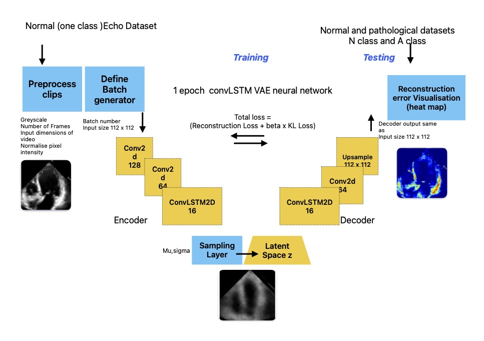
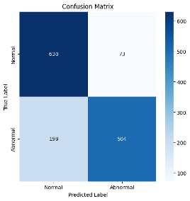
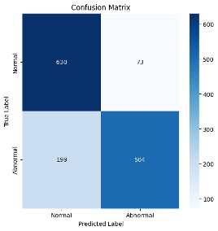
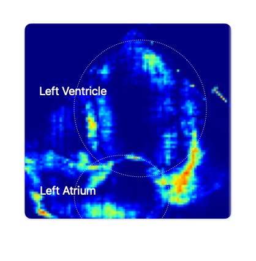
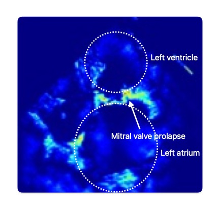
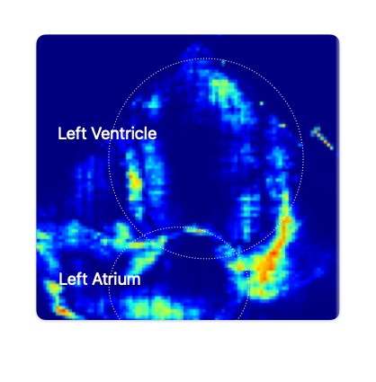
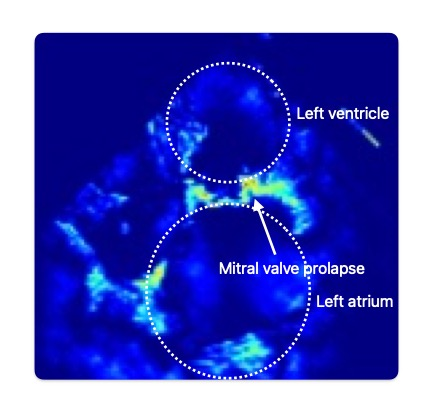

Project Title: Echocardiography Anomaly Detection Using ConvLSTM Beta Variational Autoencoder (VAE)
Description:
This project focuses on detecting anomalies in echocardiography videos using a Convolutional LSTM Variational Autoencoder (ConvLSTM VAE). The proposed ConvLSTM VAE architecture combines the strengths of convolutional layers for spatial feature extraction and LSTM layers for capturing temporal dynamics.
Task : Anomaly Detection and visualization in Echocardiography, The model uses one class Learning, just trained on normal heart function data and detects deviations as potential abnormalities. Second point was to visualize the localized areas of the anomaly , which should correspond to a pathology . Key Components:
1. Encoder: The encoder processes echocardiographic sequences, compressing them into a low-dimensional latent representation. It uses convolutional layers to capture spatial details (e.g., heart chamber boundaries and textures) and LSTM layers to model temporal variations (e.g., rhythmic heart motion). The output of the encoder represents the mean and variance of a latent Gaussian distribution.
2. Sampling and Latent Space: The encoder employs the reparameterization trick to sample latent variables z from a learned Gaussian distribution. This approach ensures smooth latent space representations while enabling gradient-based optimization. The latent space is regularized to balance reconstruction quality and anomaly detection sensitivity (disentanglement) using a beta value .
3. Decoder: The decoder reconstructs echocardiographic sequences from the latent variables z. By using LSTM layers for temporal modeling and deconvolutional layers for spatial reconstruction, the decoder aims to produce high-fidelity outputs resembling the original input.
Ground truth labels were used to separate and adjust reconstruction errors for each class in the testing set. A threshold was applied to classify errors into these categories, and the performance was evaluated against the true labels. The model performed well overall, with good precision (0.76–0.87) and recall (0.72–0.90). It identifies normal echoes more effectively (higher recall), while being slightly less effective at classifying abnormal instances (lower recall). Overall, the ROC curve suggests that the model is effective at differentiating "Normal" and "Abnormal" instances.
 


 


